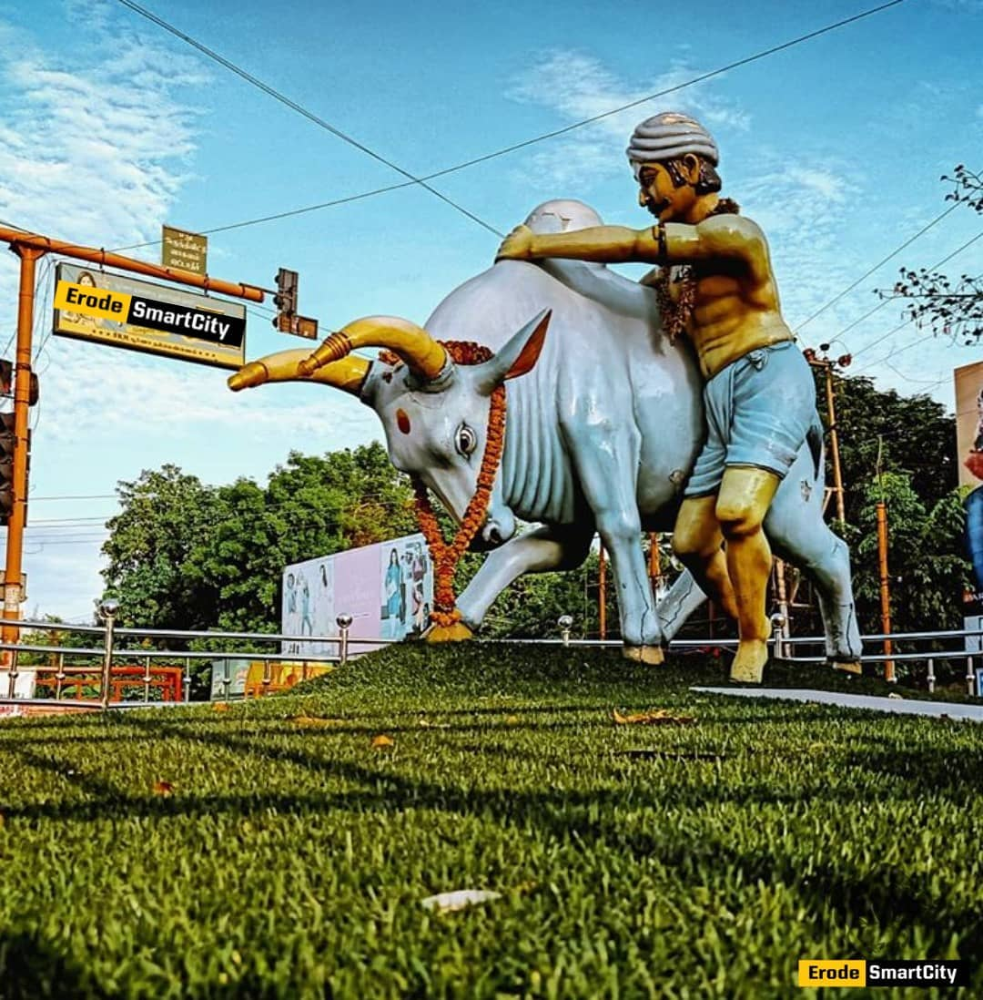

ERODE
Kaalaimaadu Silai

- "Kaalai Maadu" translates to "Bull" in Tamil, and considering Erode's connection to agriculture and its historical significance as a center for bull taming (Jallikattu)
- Erode’s first-ever Jallikattu was held at the AET School grounds in the city, where 122 tamers attempted to tame 192 bulls in front of 40,000 spectators.
- The event was largely incident-free and marked an important cultural tradition in the region34.
- Both Erode and Jallikattu offer a glimpse into the vibrant heritage and festivities of Tamil Nadu.
Jallikattu in Erode:
- Date: January 20, 2019.
- Location: AET School grounds at Pavalathampalayam, Erode.
- Participants: A total of 122 tamers attempted to tame 192 bulls.
- Audience: Approximately 40,000 spectators witnessed the event.
- Incident-Free: The first-ever Jallikattu in Erode was largely incident-free.
- Inauguration: The sport was inaugurated by notable dignitaries, including Minister for School Education, Youth and Sports Development K.A. Sengottaiyan, Minister for Animal Husbandry Udumalai K. Radhakrishnan, and Minister for Environment K.C. Karuppannan.